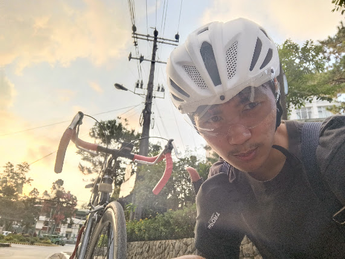

COMPUTER SCIENCE AND INFORMATION TECHNOLOGY, WEBTECH

Hi! I’m Samuel Mark M. Junatas, 19 years old, turning 20 this December. I was born in Urdaneta City, but I grew up here in Baguio City. I live in Happy Hollow Purok III Ext. It’s quite far from downtown and difficult to commute from, so I often end up running late. In my free time, I love spending time alone, playing video games, or riding my bike during the golden hour to catch the sunset. I’m also someone who tends to overthink simple things a lot.
I am currently an ongoing 2nd-year student pursuing a Bachelor of Science in Information Technology (BSIT), majoring in Web Technology. I graduated from City High in Baguio City for my high school and senior high school education, and completed my elementary education at Baguio Higher Ground Christian School.
Aspiring software developer passionate about crafting modern, scalable, and user-focused web applications that drive real-world impact.
======================